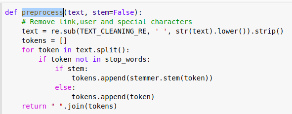

This is the sentiment140 dataset.
It contains 1,600,000 tweets extracted using the twitter api .
The tweets have been annotated (0 = negative, 2= neutre, 4 = positive)
and they can be used to detect sentiment .
Keywords : Text cleaning, word2vec, tokenizer, stopwords, stemmer, split, nltk, LSTM,
Dropout, MaxPooling, Conv, Train validation accuracy, train validation loss, prediction,
confusion matrix, accuracy, precision, recall, f1score
TEXT_CLEANING_RE = "@\S+|https?:\S+|http?:\S|[^A-Za-z0-9]+"
est une variable globale contenant une expression régulière ou rationnelle
permettant de nettoyer les texts à analyser en retirant tout les hyperliens contenu dans le text .
Ceci est possible grace à la fonction preprocess qui prend en paramètre le texte à analyser (text) et un boolean (stem) pour prendre en considérartion ou non la racine de chaque mot. Voir la partie stemmer

C'est la ligne qui text = re.sub(TEXT_CLEANING_RE, ' ', str(text).lower()).strip() qui nous intéresse pour le moment car c'est elle qui retire
dans le texte. Nous reviendrons sur le reste du code notamment dans la partie tokenizer
Avant de passer à la partie tokenisation, nous allons nous intérresser ici au stopwords . On commence par utiliser la bibliothèque nltk
de python pour télécharger le packge stopwords. Commme l'illustre la figure ci-dessous :
D'après Wikipedia, un mot vide (ou stop word, en anglais) est un mot qui est tellement commun qu'il est inutile de l'indexer ou de l'utiliser dans une recherche.
En français, des mots vides évidents pourraient être « le », « la », « de », « du », « ce »…
un mot qui apparaît avec une fréquence semblable dans chacun des textes de la collection n'est pas discriminant
car il ne permet pas de distinguer les textes les uns par rapport aux autres.
Revenons à notre fonction preprocess
Une boucle for permet de parcourir chaque mot des texts nettoyer à anlyser . Si un mot appartient au stopwords il est ignoré, sinon il est rajouté à une liste de mots appellé tokens . Et ainsi de suite pour chaque text de notre dataframe